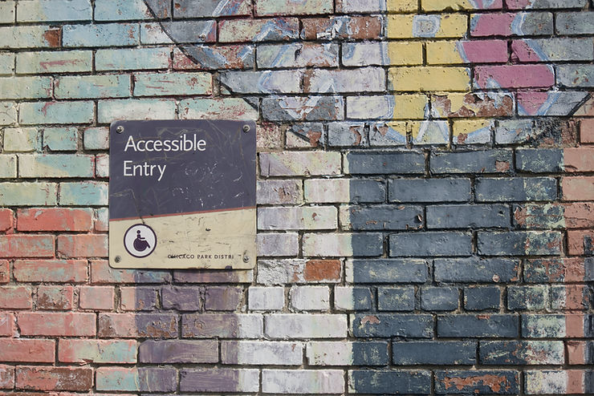

#SakaiCon 2020 Wins Kudos for #Accessibility
Jan 20, 2021
1 min read

Sakai's annual online conference is among the best at providing accessibility for low-vision participants and presenters.
Go Deeper:#SakaiCon2020 took place in mid-November 2020 and featured a variety of faculty-friendly, instruction-centered presentations.
The Bottom Line:Accessibility strategy consultant Chris Knapp (the thought leader behind the Accessiversity blog) shares his thoughts about how conference organizers successfully helped low-vision speakers get prepared and about his overall conference experience as a low-vision participant on his blog.